![IM]()
ÁLGEBRA (1120)
Objetivo(s) del curso:
El alumno analizará las propiedades de los sistemas numéricos y las utilizará en la resolución de problemas de polinomios, sistemas de ecuaciones lineales y matrices y determinantes, para que de manera conjunta estos conceptos le permitan iniciar el estudio de la física y la matemática aplicada.
1. Trigonometría.
1.1 Definición de las funciones trigonométricas para un ángulo cualquiera.
TRIGONOMETRÍA
Razón: Es una comparación de dos magnitudes a través de un cociente.
Razones trigonométricas: Son las razones que existen entre los lados de un triángulo rectángulo y cambian al variar el ángulo en cuestión; es decir, están en función del ángulo.
_archivos/image001.gif)
1.2 Definición de las funciones trigonométricas para un ángulo agudo en un triángulo rectángulo.
FUNCIONES TRIGONOMÉTRICAS
_archivos/image002.gif)
1.3 Signo de las funciones trigonométricas en los cuatro cuadrantes.
CONVENCIÓN DE SIGNOS
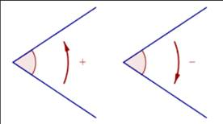
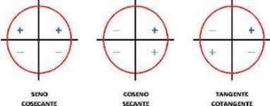
Primer cuadrante: TODAS las funciones trigonométricas son positivas
_archivos/image005.jpg)
Segundo cuadrante: Sólo las funciones SENO y COSECANTE son positivas
_archivos/image006.jpg)
Tercer cuadrante: Sólo las funciones TANGENTE y COTANGENTE son positivas
_archivos/image007.jpg)
Cuarto cuadrante: Sólo las funciones COSENO y SECANTE son positivas
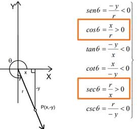
CÁLCULO DE FUNCIONES TRIGONOMÉTRICAS DE ÁNGULOS CUALQUIERA
Círculo trigonométrico: Es una circunferencia de radio uno, normalmente con su centro en el origen, que se utiliza con el fin de poder estudiar fácilmente las razones trigonométricas y funciones trigonométricas, mediante la representación de triángulos rectángulos auxiliares.
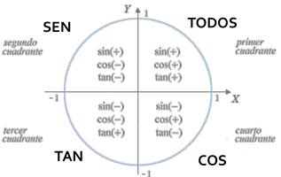
_archivos/image010.jpg)
Gráficas de las funciones trigonometricas; Las funcionestrigonométricas son funciones periódicas
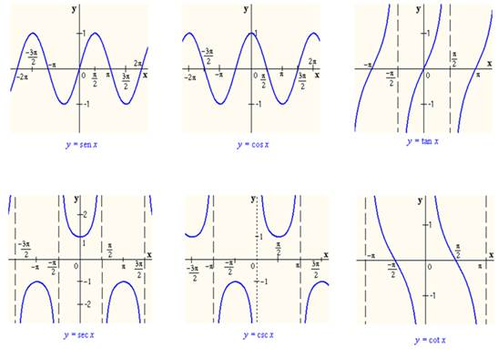
1.4 Valores de las funciones trigonométricas para ángulos de 30, 45 y 60 grados y sus múltiplos.
ÁNGULOS NOTABLES
_archivos/image012.gif)
ANGULOS COMPLEMENTARIOS
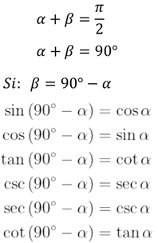
ANGULOS MÚLTIPLOS DE 90°
_archivos/image014.jpg)
ÁNGULOS SUPLEMENTARIOS
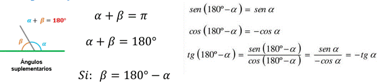
1.5 Identidades trigonométricas.
Identidad trigonométrica: Es una proposición de igualdad en la cual intervienen funciones trigonométricas y que se cumple para todo valor del argumento
IDENTIDADES PITAGÓRICAS
_archivos/image016.gif)
ÁNGULO DOBLE
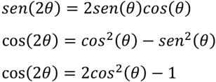
SUMA Y DIFERENCIA DE ÁNGULOS
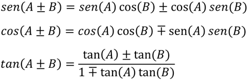
ÁNGULOS NEGATIVOS
_archivos/image019.gif)
1.6 Teorema de Pitágoras.
“En todo triángulo rectángulo el cuadrado de la hipotenusa es igual a la suma de lo cuadrados de los catetos”
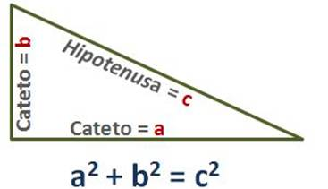
La suma de los ángulos internos de cualquier triángulo siempre es igual a 180
_archivos/image021.gif)
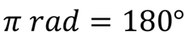
1.7 Ley de senos y ley de cosenos.
Triángulos Oblicuángulos: Son aquellos que no tienen ningún ángulo recto (90°)
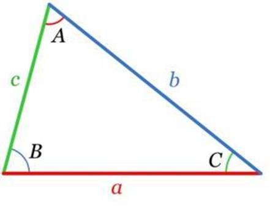
LEY DE SENOS
Necesitamos conocer mínimo:
Ø 2 lados y el ángulo opuesto a cualquiera de ellos.
Ø 2 ángulos y el lado opuesto a cualquiera de ellos.
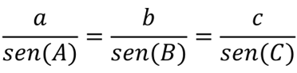
LEY DE COSENOS
Necesitamos conocer mínimo:
Ø Los 3 lados
Ø 2 lados y el ángulo comprendido entre ellos.
_archivos/image025.gif)
1.8 Ecuaciones trigonométricas de primer y segundo grado con una incógnita.
Ecuación trigonométrica: Es una igualdad en la que la incógnita está afectada por una función trigonométrica. Como estas funciones son periódicas, habrá por lo general infinitas soluciones.
Pasos a seguir para resolver ecuaciones trigonométricas:
1. Expresar todos los términos de la ecuación con el mismo argumento (ángulo)
2. Aplicar identidades trigonométricas
3. Desarrollar y reducir las expresiones trigonométricas
4. Llegar a una sola expresión trigonométrica igualada a un número
5. Aplicar la función trigonométrica inversa para obtener el valor de la incógnita
2. Números reales.
2.1 El conjunto de los números naturales: definición del conjunto de los números naturales mediante los Postulados de Peano. Definición y propiedades: adición, multiplicación y orden en los números naturales. Demostración por inducción matemática.
CONJUNTO DE LOS NÚMEROS
Número: Es un concepto matemático que expresa cantidad. Constituyen un patrón o referencia para establecer la comparación entre cantidades.
Numeral: Son los símbolos que se emplean para representar números
Conjuntos numéricos: Son las categorías en las que se clasifican los números, en función de sus diferentes características (propiedades).
_archivos/image026.jpg)
Sistema algebraico: Es un conjunto provisto de una o varias operaciones (binarias)

Números naturales: Es el conjunto de aquellos números que ocupamos para contar elementos, y se representa a partir del siguiente símbolo: ℕ
Conjunto: es una agrupación de elementos los cuales tienen una o más características en común.
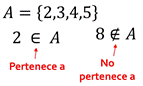
Notación:
Ø Los conjuntos se denotan con letras mayúsculas.
Ø Todos los elementos deben estar separados por comas.
Ø El total de elementos debe estar encerrado entre llaves { }.
Ø Conjuntos por extensión: se escriben todos los elementos del conjunto.
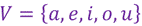
Ø Conjuntos por comprensión: se especifican las características que cumplen los elementos del conjunto.
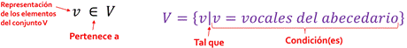
Cardinalidad: es el número de elementos que pertenecen a un conjunto.

Conjunto finito: se conoce el total de los elementos y se pueden enumerar (contar).
Conjunto infinito: no se conoce el total de los elementos (puede ser numerable o no numerable).
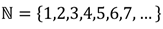
Conjunto vacío: es aquel conjunto que carece de elementos.
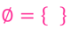
Conjunto universal: es el conjunto que contiene todos los elementos con los cuales se trabaja para una situación específica.
Subconjuntos de un conjunto: conjunto de elementos que tienen las mismas características y que está incluido dentro de otro conjunto más amplio.
_archivos/image034.gif)
OPERACIONES ENTRE CONJUNTOS
Unión: consiste en reunir en un solo conjunto todos los elementos de los conjuntos que se unen.
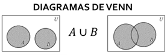
Intersección: consiste en reunir en un solo conjunto todos los elementos comunes de los conjuntos que se están analizando.
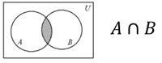
Diferencia: consiste en reunir en un solo conjunto todos los elementos contenidos en el conjunto de referencia que no se encuentran en el conjunto de operación.
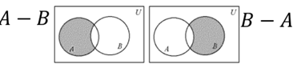
Complemento: es el conjunto de todos los elementos que no están en el conjunto de referencia y que le faltan para ser igual al conjunto universal.
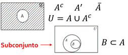
NÚMEROS NATURALES
Postulados de Peano
El conjunto ℕ de los números naturales es tal que:
Ø 1 𝜖 ℕ
Ø Para cada n ∈ ℕ se tiene que n∗∈ ℕ llamado el siguiente de n
Ø Para cada n ∈ ℕ se tiene que n∗ ≠ 1
Ø Si m, n 𝜖 ℕ y m∗ = n∗ entonces m = n
Ø Todo subconjunto S de ℕ que tenga las propiedades:
o a) 1 ∈ 𝑆
o b) 𝑘 ∈ 𝑆 implica que 𝑘∗ ∈ 𝑆 llamado
Es el mismo conjunto ℕ
OPERACIONES EN LOS NÚMEROS NATURALES
Adición en los números naturales
Definición:
Ø n + 1 = n∗ para todo n 𝜖 ℕ
Ø n + m∗ = (n + m) ∗ siempre que n + m
esté definido
Multiplicación en los números naturales
Definición:
Ø n ∙ 1 = n∗ para todo n 𝜖 ℕ
Ø n ∙ m∗ = (n ∙ m) + n
Propiedades de la adición y la multiplicación
_archivos/image039.gif)
ORDEN EN LOS NÚMEROS NATURALES
Dados dos naturales n y m, decimos que n es menor que m, lo que representamos mediante n < m, si: ∃ 𝑥 ∈ ℕ tal que n + 𝑥 = m
Dados dos naturales m y n, decimos que m es mayor que n, lo que representamos mediante m > n, si: n < m
Ley de tricotomía: Si m y n son números naturales cualesquiera, entonces se verifica una y sólo una de las siguientes proposiciones:
Ø n < m
Ø n = m
Ø m < n
Teoremas:
_archivos/image040.gif)
INDUCCIÓN MATEMÁTICA
Inducción matemática: es un razonamiento utilizado en la demostración de proposiciones que dependen de un parámetro que sólo admite valores naturales.
Pasos:
1. Demostrar que la proposición es válida para el primer valor admisible (n=1).
2. Suponer que la proposición es válida para el caso general, es decir, para el valor n=k (hipótesis de inducción).
3. Demostrar a partir de la hipótesis que la proposición es válida para el siguiente valor de k, es decir, k+1 (tesis de inducción).
2.2 El conjunto de los números enteros. Definición y propiedades: igualdad, adición, multiplicación y orden en los enteros. Representación de los números enteros en la recta numérica.
NÚMEROS ENTEROS
Números enteros: Es el conjunto de aquellos números que se obtienen mediante la diferencia de dos números naturales: ℤ = {𝑥|𝑥 = m − n; m, n ∈ ℕ}, ℕ ⊂ ℤ
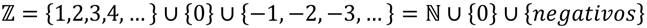


OPERACIONES EN LOS NÚMEROS ENTEROS
Adición en los números enteros
Sea a = m - n, b = p - q dos números enteros, con m, n, p, q ∈ N. El número a + b se define como:
a + b = (m + p) - (n + q)
Sustracción en los números enteros
Sea a, b ∈ Z, el número a - b se define como:
a – b = a + (-b)
Multiplicación en los números enteros
Sea a = m - n, b = p - q dos números enteros, con m, n, p, q ∈ N. El número a ∙ b se define como:
a ∙ b = (m · p + n ∙ q) - (n ∙ p + m ∙ q)
Propiedades adicionales de la multiplicación
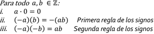
Propiedades de la adición y la multiplicación
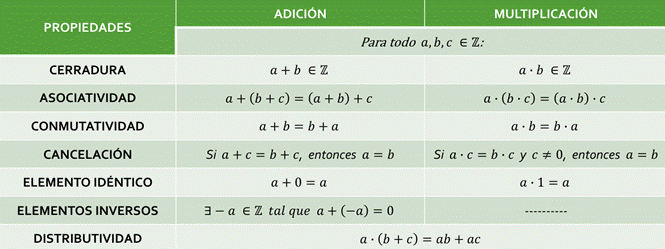
ORDEN EN LOS NÚMEROS ENTEROS
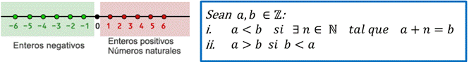
2.3 El conjunto de los números racionales: definición a partir de los números enteros. Definición y propiedades: igualdad, adición, multiplicación y orden en los racionales. Expresión decimal de un número racional. Algoritmo de la división en los enteros. Densidad de los números racionales y representación de éstos en la recta numérica.
NÚMEROS RACIONALES
Números racionales: Es el conjunto de aquellos números que se obtienen mediante el cociente de dos números enteros (fracciones finitas o infinitas): ℚ = {𝑥|𝑥 = a/b; a, b ∈ ℤ }, ℕ ⊂ ℤ ⊂ ℚ
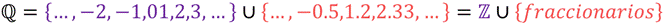
_archivos/image048.gif)
OPERACIONES EN LOS NÚMEROS RACIONALES
Adición en los números racionales
_archivos/image049.gif)
Sustracción en los números racionales
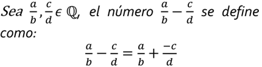
Multiplicación en los números racionales
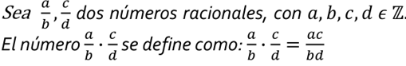
División en los números racionales
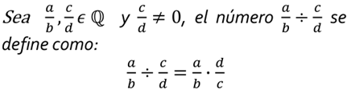
Teorema de la densidad de los racionales
Para todo 𝑥, y 𝜖 ℚ, con 𝑥 < y existe un número racional entre 𝑥 y y tal que: 𝑥 < (𝑥+y) / 2 < 𝑥
Propiedades de la adición y la multiplicación
_archivos/image053.gif)
2.4 El conjunto de los números reales: existencia de números irracionales (algebraicos y trascendentes). Definición del conjunto de los números reales; representación de los números reales en la recta numérica. Propiedades: adición, multiplicación y orden en los reales. Completitud de los reales. Definición y propiedades del valor absoluto. Resolución de desigualdades e inecuaciones.
NÚMEROS IRRACIONALES
Números irracionales: Es el conjunto de aquellos números que no se pueden expresar como el cociente o razón de dos números enteros. Son números decimales que poseen infinitas cifras decimales no periódicas): ℚ′ = {…, ln 2, 𝜑, e, 𝜋, …} = ℝ − ℚ
_archivos/image054.jpg)
NÚMEROS REALES
Números reales: es el conjunto que contiene tanto a los números racionales como a los irracionales:
ℝ = ℚ ∪ Ι = ℚ ∪ ℚ′
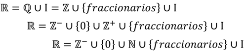
OPERACIONES EN LOS NÚMEROS REALES
División en los números reales
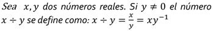
Sustracción en los números reales
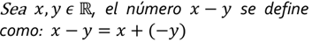
Signo de los números reales
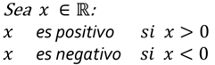
Propiedades adicionales de la multiplicación
_archivos/image059.gif)
_archivos/image060.gif)
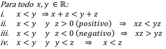
Propiedades de la adición y la multiplicación
_archivos/image062.gif)
ORDEN EN LOS NÚMEROS REALES (DESIGUALDADES E INECUACIONES)
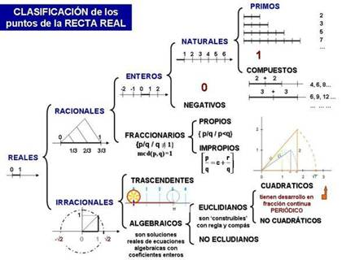
Desigualdad: es una expresión que indica que una cantidad es mayor o menor que otra.
Inecuación: es una desigualdad en la que hay una o más cantidades desconocidas (incógnitas) y que sólo de verifica para determinados valores de las incógnitas.
Valor absoluto
_archivos/image064.jpg)
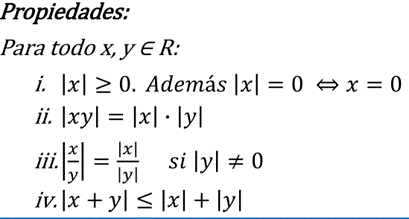
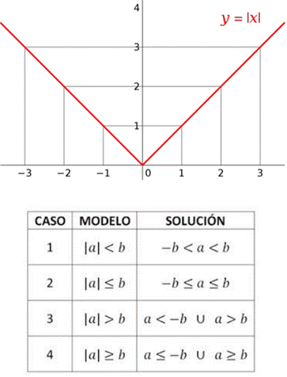
3. Números complejos.
3.1 Forma binómica: definición de número complejo, de igualdad y de conjugado. Representación gráfica. Operaciones y sus propiedades: adición, sustracción, multiplicación y división. Propiedades del conjugado.
NÚMEROS COMPLEJOS
Números complejos: es el conjunto que contiene tanto a los números reales como a los números imaginario:
ℂ = ℝ ∪ Im = { z |z = a + i b; a, b ∈ ℝ; i2 = -1 }, ℝ = ℚ ∪ ℚ´

FORMA BINÓMICA
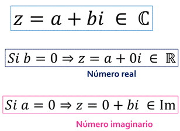
Unidad imaginaria
_archivos/image070.gif)
Diagrama de Argand o Plano complejo
_archivos/image071.gif)
FORMA VECTORIAL O FORMA CARTESIANA
_archivos/image072.gif)
Conjugado de un número:
Sea z = 𝑎 + b𝑖 un número complejo.
El conjugado de z, que
representamos con  , se define como:
, se define como: 
_archivos/image075.gif)
_archivos/image076.gif)
OPERACIONES EN LOS NÚMEROS COMPLEJOS EN FORMA BINÓMICA
_archivos/image077.gif)
Propiedades de la adición y la multiplicación
_archivos/image078.gif)
3.2 Forma polar o trigonométrica: definición de módulo, de argumento y de igualdad de números complejos en forma polar. Operaciones en forma polar: multiplicación, división, potenciación y radicación.
FORMA POLAR O TRIGONOMÉTRICA
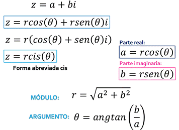
Diagrama de Argand o Plano complejo
_archivos/image080.gif)
OPERACIONES EN LOS NÚMEROS COMPLEJOS EN FORMA POLAR O TRIGONOMÉTRICA
_archivos/image081.gif)
3.3 Forma exponencial o de Euler. Operaciones en forma exponencial: multiplicación, división, potenciación y radicación.
FORMA EXPONENCIAL
_archivos/image082.gif)
Diagrama de Argand o Plano complejo
_archivos/image083.gif)
OPERACIONES EN LOS NÚMEROS COMPLEJOS EN FORMA EXPONENCIAL
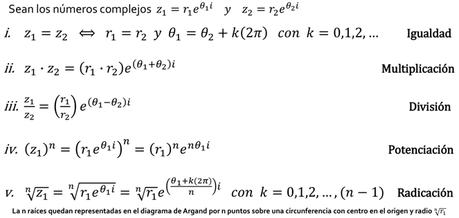
3.4 Resolución de ecuaciones con una incógnita que involucren números complejos.
_archivos/image085.gif)
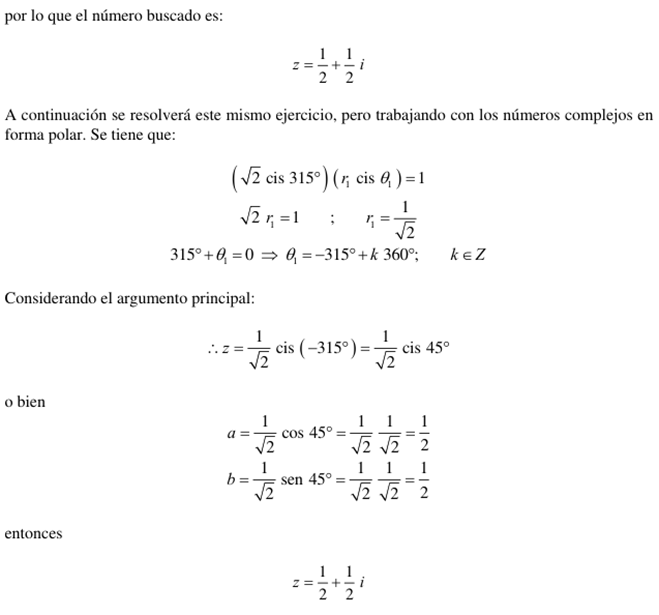
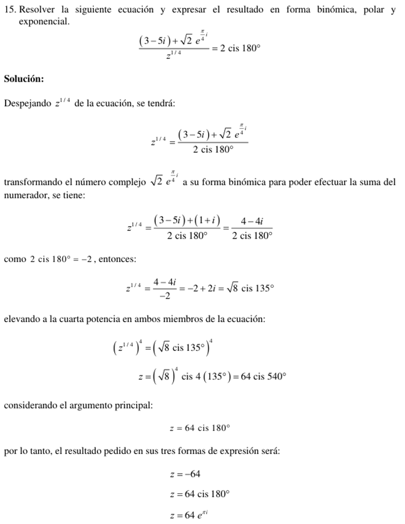
_archivos/image088.gif)
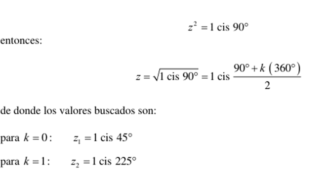
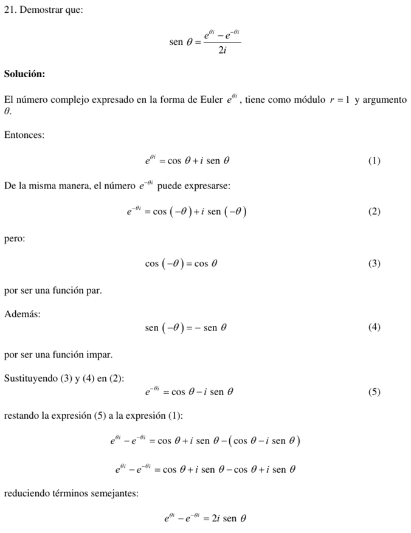
4. Polinomios.
4.1 Definición de polinomio. Definición y propiedades: adición, multiplicación de polinomios y multiplicación de un polinomio por un escalar.
POLINOMIO
Término o monomio
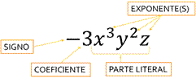
Términos semejantes: son aquellos términos o monomios cuya parte literal es la misma y sólo cambian sus coeficientes.
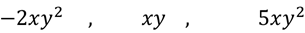
Binomio: es la suma algebraica de 2 términos o monomios.

Trinomio: es la suma algebraica de 3 términos o monomios.

Polinomio: Es una expresión algebraica que constituye la suma o la resta de un número finito de términos o monomios, que presenta la siguiente forma.
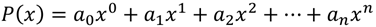
Donde los coeficientes son:

Y los términos del polinomio son:

Una forma simplificada de expresar un polinomio es utilizando el operador sumatoria o suma abreviada.
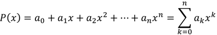
Grado de un polinomio: Corresponde al mayor exponente presente en los términos del polinomio.
OPERACIONES DE POLINOMIOS
_archivos/image101.gif)
Igualdad de polinomios
Adición de polinomios
_archivos/image103.gif)
Sustracción de polinomios

Multiplicación de polinomios
_archivos/image105.gif)
Propiedades de la adición y la multiplicación
4.2 División de polinomios: divisibilidad y algoritmo de la división. Teorema del residuo y del factor. División sintética.
ALGORITMO DE LA DIVISIÓN
_archivos/image107.gif)
TEOREMA DEL RESIDUO
_archivos/image110.gif)
TEOREMA DEL FACTOR
4.3 Raíces de un polinomio: definición de raíz, teorema fundamental del álgebra y número de raíces de un polinomio.
RAÍCES DE UN POLINOMIO
_archivos/image112.gif)
Conceptos equivalentes
_archivos/image113.gif)
TEOREMA FUNDAMENTAL DEL ÁLGEBRA
RESUMEN
_archivos/image115.gif)
4.4 Técnicas elementales para buscar raíces: posibles raíces racionales y regla de los signos de Descartes.
RAÍCES RACIONALES
_archivos/image116.gif)
REGLA DE LOS SIGNOS DE DESCARTES
TEOREMA DE LAS COTAS DE LAS RAÍCES REALES
_archivos/image118.gif)
RAICES IRRACIONALES
_archivos/image119.gif)
_archivos/image120.gif)
RAICES COMPLEJAS
_archivos/image121.gif)
5. Sistemas de ecuaciones.
5.1 Definición de ecuación lineal y de su solución. Definición de sistema de ecuaciones lineales y de su solución. Clasificación de los sistemas de ecuaciones lineales en cuanto a la existencia y al número de soluciones. Sistemas homogéneos, soluciones triviales y varias soluciones.
ECUACIÓN LINEAL
SISTEMAS DE ECUACIÓN LINEAL
Sistema de ecuaciones lineales: es un conjunto de al menos 2 ecuaciones lineales que contienen las mismas variables y que comparten la misma solución.
Un sistema de m ecuaciones lineales con n incógnitas sobre C es una expresión de la forma:
_archivos/image124.gif)

SISTEMAS HOMOGÉNEOS
Un sistema de ecuaciones lineales es homogéneo cuando todos sus términos independientes son iguales a cero, es decir:
_archivos/image127.gif)
CLASIFICACIÓN DE LOS SISTEMAS DE ECUACIONES LINEALES
_archivos/image128.gif)
REPRESENTACIÓN MATRICIAL DE SISTEMAS DE ECUACIONES
_archivos/image129.gif)
5.2 Sistemas equivalentes y transformaciones elementales. Resolución de sistemas de ecuaciones lineales por el método de Gauss.
SISTEMAS EQUIVALENTES
Cuando dos sistemas de ecuaciones lineales tienen las mismas soluciones se dice que son equivalentes.
Uno de los métodos que se emplean para obtener las soluciones de un sistema de ecuaciones lineales se basa en el empleo de ciertas transformaciones, llamadas transformaciones elementales, que no alteran las soluciones del sistema; es decir, transformaciones que al aplicarse a un sistema dan como resultado un sistema equivalente.
Las transformaciones elementales pueden ser de tres tipos y consisten en:
i. Intercambiar dos ecuaciones
ii. Multiplicar una ecuación por un número diferente de cero
iii. Multiplicar una ecuación por un número y sumarla a otra ecuación, reemplazando esta última por el resultado obtenido
MÉTODO DE GAUSS
El procedimiento más cómodo para obtener las soluciones de un sistema de ecuaciones lineales es, tal vez, el conocido como método de Gauss.
Este método consiste en la eliminación consecutiva de las incógnitas con el propósito de llegar a un sistema que tenga forma escalonada.
_archivos/image130.gif)
Para llevar a cabo dicha eliminación sin alterar las soluciones del sistema, se recurre a las transformaciones elementales que hemos descrito.
5.3 Aplicación de las ecuaciones lineales para la solución de problemas de modelos físicos y matemáticos.
_archivos/image132.gif)
_archivos/image133.gif)
_archivos/image135.gif)
6. Matrices y determinantes.
6.1 Definición de matriz y de igualdad de matrices. Operaciones con matrices y sus propiedades: adición, sustracción, multiplicación por un escalar y multiplicación. Matriz identidad.
MATRIZ
Matriz: Es un conjunto de elementos (números, objetos, operadores, etc.) dispuestos en un arreglo bidimensional, de renglones y columnas, encerrados entre paréntesis o corchetes, que obedecen ciertas reglas algebraicas
_archivos/image136.gif)
TIPO DE MATRICES
Vector (matriz) renglón o vector (matriz) columna: Es una matriz formada por un solo renglón o una sola columna, respectivamente.
Matriz nula: Es una matriz donde todos sus elementos son ceros.

Matriz rectangular: Es aquella matriz cuyo número de renglones es diferente al número de columnas, es decir: 𝒎 ≠ 𝒎
Matriz cuadrada: Es aquella matriz cuyo número de renglones es igual al número de columnas: 𝒎 = n
_archivos/image139.gif)
_archivos/image140.gif) OPERACIONES
ENTRE MATRICES
OPERACIONES
ENTRE MATRICES
Sean dos matrices:
Igualdad de matrices: Dos matrices son iguales si son del mismo orden y si los elementos de la misma posición son iguales en ambas, es decir:
Suma de matrices: Esta operación únicamente se puede realizar entre matrices del mismo orden. Para realizarla se suman elemento por elemento en sus posiciones correspondientes:

Diferencia de matrices: Esta operación únicamente se puede realizar entre matrices del mismo orden. Para realizarla se cambia el signo de cada uno de los elementos de la segunda matriz y posteriormente se realiza la suma de elemento por elemento en sus posiciones correspondientes.
Propiedades de la adición
Multiplicación de matrices por un escalar: Esta operación se realiza multiplicando el escalar por cada uno de los elementos de la matriz, es decir:
Propiedades por un escalar
Producto de matrices: Esta operación únicamente se puede realizar entre matrices donde el número de columnas de la primera matriz es igual al número de renglones de la segunda:
El elemento que se encuentra en la posición correspondiente al renglón i y la columna j de la matriz producto AB, se obtiene sumando los productos de los elementos del renglón i de la matriz A por sus elementos correspondientes en la columna j de la matriz B:
_archivos/image150.gif)
Matriz identidad: es una matriz cuadrada de orden n tal que todos los elementos de su diagonal principal son uno y los elementos fuera de ella son cero. Ejemplos
6.2 Definición y propiedades de la inversa de una matriz. Cálculo de la inversa por transformaciones elementales.
TIPOS Y PROPIEDADES
Matriz inversa: la matriz cuadrada de orden n 𝐴 tiene una matriz inversa 𝐴−1 la cual cumple que:
Una de las condiciones necesarias para que una matriz tenga inversa es que debe ser una matriz cuadrada. Además, la inversa deberá ser también cuadrada y del mismo orden que A
Matriz no singular: es aquella matriz 𝐴 que SÍ tiene una matriz inversa 𝐴−1
Matriz singular: es aquella matriz 𝐴 que NO tiene una matriz inversa 𝐴−1
_archivos/image153.gif)
6.3 Ecuaciones matriciales y su resolución. Representación y resolución matricial de los sistemas de ecuaciones lineales.
_archivos/image156.gif)
6.4 Matrices triangulares, diagonales y sus propiedades. Definición de traza de una matriz y sus propiedades.
TIPOS Y PROPIEDADES
Traza de una matriz cuadrada: es la suma de los elementos de su diagonal principal:
Matriz diagonal: es una matriz cuadrada en donde los elementos de su diagonal principal son diferentes de cero y los demás son ceros. Ejemplos:
_archivos/image159.gif)
Matriz triangular superior: es una matriz cuadrada en la cual todos los elementos por debajo de la diagonal principal son cero. Ejemplos:
Matriz triangular inferior: es una matriz cuadrada en la cual todos los elementos por arriba de la diagonal principal son cero. Ejemplos:
_archivos/image161.gif)
6.5 Transposición de una matriz y sus propiedades. Matrices simétricas, antisimétricas y ortogonales. Conjugación de una matriz y sus propiedades. Matrices hermitianas, antihermitianas y unitarias. Potencia de una matriz y sus propiedades.
TIPOS Y PROPIEDADES
Matriz transpuesta: la matriz transpuesta de A es la matriz en donde los renglones de A ahora son las columnas de la transpuesta, es decir:
Matriz conjugada: Sea A una matriz de números complejos, su matriz conjugada es aquella matriz en donde se reemplaza cada elemento por su respectivo complejo conjugado: Ā
_archivos/image163.gif)
Matriz simétrica: es aquella matriz cuadrada que es igual a su propia matriz transpuesta: 𝐴 = 𝐴𝑇
Matriz antisimétrica: es aquella matriz cuadrada que es igual al negativo de su propia transpuesta: 𝐴 = −𝐴𝑇
Matriz ortogonal: es aquella matriz cuadrada cuya matriz transpuesta es igual a su inversa: 𝐴𝑇 = 𝐴−1
El determinante de una matriz ortogonal es igual a 1
Matriz unitaria: es aquella matriz cuadrada cuya matriz conjugada transpuesta es igual a su inversa: 𝐴∗ = 𝐴−1
El determinante de una matriz unitaria es igual a 1
Matriz hermitiana: es aquella matriz cuadrada de números complejos que es igual a su propia transpuesta conjugada: 𝐴 = (Ā)𝑇 = 𝐴∗
Matriz antihermitiana: es aquella matriz cuadrada de números complejos que es igual al negativo de su transpuesta conjugada: 𝐴 = −(Ā)𝑇 = -𝐴∗
6.6 Definición de determinante de una matriz y sus propiedades. Cálculo de determinantes: regla de Sarrus, desarrollo por cofactores y método de condensación.
Determinante: es un número asociado a una matriz cuadrada que se puede obtener a partir de diferentes métodos: det (𝐴) = [𝐴]
Matriz no singular: es aquella matriz 𝐴 que SÍ tiene una matriz inversa 𝐴−1 (det (𝐴) ≠ 0)
Matriz singular: es aquella matriz 𝐴 que NO tiene una matriz inversa 𝐴−1 (det (𝐴) = 0)
PROPIEDADES DE LOS DETERMINANTES:
1) Si todos los elementos de una fila o columna de un determinante son nulos, el valor del determinante es nulo.
2) Si un determinante tiene dos filas o columnas proporcionales el determinante es cero.
3) Si todos los elementos de una fila o columna se multiplican por un escalar, el valor del determinante queda multiplicado por dicho escalar
_archivos/image164.gif)
REGLA DE SARRUS
el determinante se obtiene de restar la multiplicación de los elementos de la diagonal principal de la matriz y la multiplicación de los elementos de la diagonal secundaria de la misma matriz.
El inconveniente es que la regla de Sarrus únicamente se puede utilizar para determinantes de matrices de 2x2 y 3x3.
_archivos/image165.gif)
MENORES Y COFACTORES
Menor: el menor o menor complementario de una matriz A es el determinante de alguna submatriz, obtenido de A mediante la eliminación de una o más de sus filas o columnas [𝑀𝑖𝑖].
Cofactor: el cofactor del elemento de la matriz [𝑎𝑖𝑖] se denota como [C𝑖𝑖] y está dado por:
6.7 Cálculo de la inversa por medio de la adjunta. Regla de Cramer para la resolución de sistemas de ecuaciones lineales de orden superior a tres.
MATRIZ INVERSA Y MATRIZ ADJUNTA
Matriz inversa: la matriz cuadrada de orden n 𝐴 tiene una matriz inversa 𝐴−1 la cual cumple que:
Una de las condiciones necesarias para que una matriz tenga inversa es que debe ser una matriz cuadrada. Además, la inversa deberá ser también cuadrada y del mismo orden que A.
Matriz no singular: es aquella matriz 𝐴 que SÍ tiene una matriz inversa 𝐴−1
Matriz singular: es aquella matriz 𝐴 que NO tiene una matriz inversa 𝐴−1
CÁLCULO DE LA INVERSA POR DETERMINANTES
_archivos/image169.gif)
Donde Adj(A) se le conoce como la matriz adjunta de A.
Matriz adjunta: la matriz adjunta Adj(A) de la matriz cuadrada de orden n 𝐴 es la matriz de cofactores de su transpuesta.
Esto significa que para encontrar la matriz adjunta primero se transpone la matriz original y después, con base en ella, se calcula la matriz de cofactores.
RESOLUCIÓN DE SISTEMAS DE ECUACIONES LINEALES
REGLA DE CRAMER
Se dice que un sistema con n ecuaciones lineales y n incógnitas es de Cramer cuando el determinante de la matriz de los coeficientes es distinto a cero. Así todo sistema de Cramer es consistente determinado, es decir, tiene solución única.
_archivos/image171.gif)
Con la regla de Cramer se tienen los siguientes casos:
_archivos/image172.gif)
_archivos/image173.gif)
_archivos/image174.gif)
_archivos/image176.gif)
7. Bibliografía
Arzamendi, P. Sergio Roberto. Cuaderno de ejercicios de álgebra.
León Cárdenas, Javier. Álgebra.
Lehmann, Charles H. Álgebra.
Solar G., Eduardo, y Speziale de G., Leda. Álgebra I.
Velázquez T., Juan. Fascículo de inducción matemática.